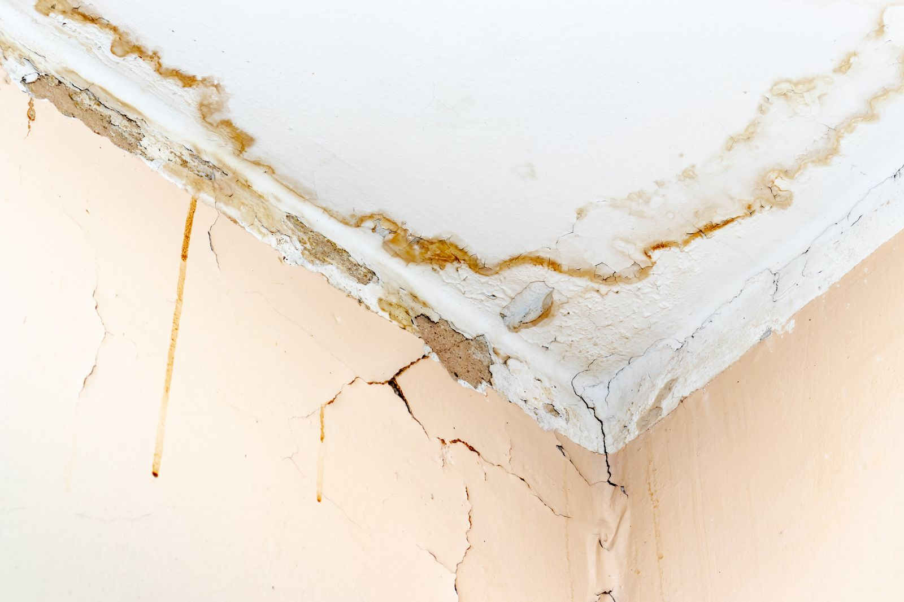
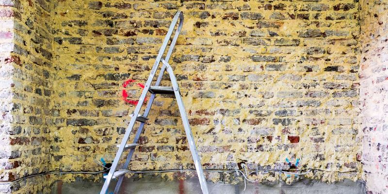

Stock photoSt. Tammany Parish
Remediation and Property Restoration in Covington, LA
Old plaster, tired pipes and damp corners turn up in Covington houses and in the shops and offices downtown. We take on water, fire or smoke, mold, sewage and deep cleaning jobs in both. Call (504) 285-5666. We answer 24/7.
Pick a problem
What's Happening at Your Property?
Plenty of Covington homes and downtown storefronts went up long before today's plumbing and wiring. Choose the closest match for your house or business and we'll show you our first moves.



StockLeaks and Water Damage
Common in older buildings
Slow drips from old supply lines or worn roof flashing can soak a subfloor for months before a stain ever shows.
Where we begin
Water damage work at a Covington home or a downtown business starts by tracing where the water travels, then drying the framing before anything gets closed back up.
Helpful to mention
Roughly how old the building is, and whether the leak shows up after rain or all the time.
Smoke and Soot
Common in older buildings
Soot works its way into old plaster, wood trim, shop shelving and the gaps around original windows.
Where we begin
We sort what can be cleaned from what has to go, then lay out the smoke and soot cleanup one room at a time, whether that means a parlor or a sales floor.
Helpful to mention
Where the fire started, and whether the fire marshal has released the building.
Mold in Damp Corners
Common in older buildings
Damp crawl spaces, back storerooms and closets on outside walls give it room to grow.
Where we begin
We seal the area off, remove the damaged materials, then clean anything worth holding on to. Our pages on residential mold removal and commercial mold removal lay out each part.
Helpful to mention
Where you see the spots, and whether that part of the house has leaked before.
Sewage Backups
Common in older buildings
Clay and cast iron drain lines crack and shift with age, and tree roots find the gaps.
Where we begin
We clear out the mess and sanitize every surface it reached, in a house or a storefront, before talking about repairs. Our sewage backup cleanup page explains the order.
Helpful to mention
Which fixture overflowed first, and whether anyone has used the drains since.
Deep Cleaning
Common in older buildings
Heart pine floors, old tile and painted trim want a gentler hand than newer finishes, at home or in an office.
Where we begin
We try a small hidden spot first and choose the method from there. Homeowners can browse our cleaning services, wall cleaning included, and shop owners can start with commercial cleaning.
Helpful to mention
Which rooms, what the floors are made of, and any date you're working toward.
Older homes and storefronts
What Older Covington Buildings Hide
A house or a shop with a few decades behind it keeps its trouble out of sight. Pick a spot to see the warning signs.
Stains That Start Overhead
- Old roof decking and flashing can let rain in a little at a time.
- Look for brown rings on the ceiling below and matted, damp insulation.
- Take a flashlight up after a heavy rain and check the underside of the roof.
- Water that has reached the ceiling calls for water damage restoration before any paint goes on.
Crawl Space Trouble
- Raised houses breathe through the crawl space, and damp air down there drifts up through the floor.
- Cupped boards, a soft patch near a bathroom or a musty hallway are early clues.
- Keep the foundation vents clear of leaves and stored things.
- A smell that won't fade can point to growth under the house. Our mold removal page covers how we handle it.
Pipes With Some Age on Them
- Galvanized and cast iron lines corrode from the inside, so the outside can look fine.
- Rusty water, weak pressure and slow drains tend to show up first, at a kitchen sink or a shop restroom.
- Find your main shutoff now, and show your staff where it is too.
- If a drain backs up into the building, keep everyone clear and read our sewage cleanup steps.
Our process
Working in an Older Covington Building
Start With a Call
Phone us or fill in the online form. A picture of the stain or the room goes a long way.
We Find the Source
Water, smoke or odor gets traced back to where it began, behind plaster if it has to be.
Careful Work Around Old Materials
Original trim and floors stay covered while we dry, clean or remove what's damaged.
A Final Walk With You
Before we leave, we go through each room together and answer anything left on your mind.
Old building quirks
Normal for an Old Building or a Problem?
Older homes and storefronts creak and crack in ways newer ones don't. Tap a card to find out which ones need us.
From a sewage cleanup customer
What a Sewage Cleanup Customer Said
"We had a serious sewage backup in our office, and their team handled it with expertise and care. Their commercial cleaning services were thorough, and the odor was completely removed. Great job!"
All About Covington
Covington, Where Two Rivers Meet
Covington is the parish seat of St. Tammany Parish, built on a fork of the Bogue Falaya and Tchefuncte rivers. John Wharton Collins founded it in 1813 under the name Wharton.
- ParishSt. Tammany
- Population11,564 at the 2020 census
- Founded1813, first named Wharton
- ZIP Codes70433, 70435
Things to Do in Covington
- 01
Bogue Falaya Wayside Park
A riverside park near downtown with a sandy bank and a launch for kayaks and canoes.
- 02
The Covington Trailhead
Where the Tammany Trace begins its paved run east toward Abita Springs and Mandeville.
- 03
Smith's General Store
H.J. Smith's Sons, a Columbia Street shop the Smith family has kept open since 1876, with a small museum inside.
Landmarks Christ Episcopal Church, H.J. Smith's Sons, the Covington Trailhead, Bogue Falaya Wayside Park
Find Covington on Google MapsHometown name
Made His Home in Covington
Walker Percy
Novelist whose first book, The Moviegoer, won the National Book Award for fiction.
He settled in Covington with his family and lived there until his death in 1990.
Fun Facts About Covington
- The town started out as Wharton. The Louisiana legislature changed the name to Covington in 1816.
- Downtown sits in the fork where the Bogue Falaya runs into the Tchefuncte River.
- Christ Episcopal Church's congregation was organized in 1846. Its old church building joined the National Register of Historic Places in 1980.
- From its start in Covington, the Tammany Trace stretches about 31 miles over old railroad ground, all the way to Slidell.
Getting here
Driving Up to Covington
- From New OrleansHead for Causeway Boulevard in Metairie, ride the Causeway across the lake and follow US 190 north into town.
- From Baton Rouge or HammondDrive I-12 east and leave at the US 190 exits for Covington.
Nearby Communities
- Abita Springs
- Folsom
- Madisonville
- Mandeville
- Slidell
Covington, answered
Questions From Covington Homeowners and Shop Owners
Do You Work on Historic Homes in Covington?
We do. Original floors, trim and plaster get covered while we work, and we'll talk through what can stay before anything comes out.
Is an Old Ceiling Stain Worth a Call?
If it has grown or feels soft, yes. A dry mark that hasn't changed in years can wait, though a photo lets us tell you for sure.
Can You Handle Mold in a Crawl Space?
Yes, as a separate job. We wall the space off with plastic, take out affected wood or insulation, and clean the framing that can stay. Start with our home mold removal page.
Do You Work in Older Buildings Downtown?
Yes. Shops and offices in older buildings get the same care. Our commercial cleaning and business water damage pages explain how.
What Does an Estimate Involve?
A call to our team, or the online form plus a couple of pictures. The estimate is free, and somebody picks up 24/7.
Across Greater New Orleans
Other Areas We Serve
Fastest way: call
Day or Night, the Porch Light Stays Lit
(504) 285-5666, day or night. Can't talk right now? Send the form and we'll call you back.
Call (504) 285-5666